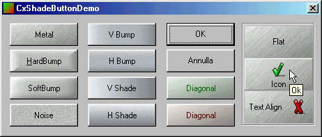

Продолжаем украшать
кнопки
Автор: Davide Pizzolato

Описание
Данный класс позволит без лишних проблем
придать Вашим кнопкам профессиональный вид. Не
требуется никаких ресурсов - все битмапы
генерируются в процессе запуска приложения.
Компилятор: Visual C++ 4-6
Часть кода взята из примера CxSkinButton.
- Добавляем в проект "xShadeButton.cpp" и
"xShadeButton.h".
- Включаем "xShadeButton.h" в заголовочные файлы, в
которых будем использовать кнопки
- Создаём (или редактируем) переменную-член для
каждой кнопки которую мы хотим использовать как
CxShadeButton.
Если Class Wizard не показывает тип CxShadeButton, то
выбираем CButton и редактируем код вручную.
- В инициализации окна добавляем методы
CxShadeButton:
BOOL CxShadeButtonDemoDlg::OnInitDialog()
{
m_btn1.SetTextColor(RGB(255,0,0));
m_btn1.SetToolTipText("Button1");
m_btn1.SetShade(SHS_DIAGSHADE,8,10,5,RGB(55,255,55));
Методы CxShadeButton
CxShadeButton CButton. CxShadeButton
использует 6 функций для настройки вида кноки.
Стиль BS_OWNERDRAW добавляется автоматически и
нет необходимости устанавливать свойство "Owner
draw" в редакторе ресурсов.
void SetShade(UINT shadeID=0,BYTE granularity=8,BYTE highlight=10,
BYTE coloring=0,COLORREF color=0);
Генерирует битмапы для кнопки.
shadeID : эффект может быть одним из
следующих:
SHS_NOISE = 0
SHS_DIAGSHADE = 1
SHS_HSHADE = 2
SHS_VSHADE = 3
SHS_HBUMP = 4
SHS_VBUMP = 5
SHS_SOFTBUMP =6
SHS_HARDBUMP = 7
SHS_METAL = 8
granularity : этот параметр добавляет
зернистость к кнопке. Наиболее красивый вид
получается при значениях от 5 до 20; 0 убирает этот
эффект.highlight : устанавливает уровень яркости
когда мышка наводится на кнопку. Рекомендуемые
значения от 5 до 20; 0 убирает эффект. coloring : устанавливает процент примеси color
к палитре кнопки. Значение может варьироваться в
пределах от 0 до 100; 0 убирает этот эффект. color : если coloring выше чем ноль,
то color смешивается со стандартными
цветами кнопки. Важно : использовать
параметры coloring и color как можно
аккуратнее для того, чтобы получить приемлемые
результаты.
void SetToolTipText(CString s);
COLORREF SetTextColor(COLORREF new_color);
void SetIcon(UINT nIcon, UINT nIconAlign=BS_CENTER);
void SetTextAlign(UINT nTextAlign=BS_CENTER);
nTextAlign : выравнивание текста кнопки
может иметь следующие значения:
BS_CENTER
BS_LEFT
BS_RIGHT
void SetFlat(bool bFlag);
bFlag : устанавливает стиль бордюра:
FALSE = стандартный 3D бордюр.
TRUE = плоский бордюр.
|